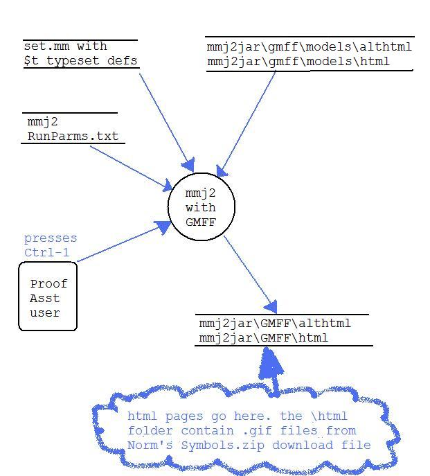

The GMFFDoc folder contains a mockup of the mmj2jar folder
containing a new sub-directory, "GMFF" (Graphics Mode Formula
Formatting).
Inside the GMFF folder are two sub-folders, "html" -- destination
for
image-based html exports from Proof Assistant -- and "althtml" -- the
destination for Unicode-based html exports.
Notice that mmj2jar\GMFF\html contains the actual .gif
files copied from Norm's "Symbols" download. It will be necessary for
the user to periodically, and personally,
refresh the local copy of the Metamath .gif files stored
in mmj2jar\GMFF\html.
GMFF\html and GMFF\althtml each contain a
sample "mockup" of the
webpage which would be exported by the mmj2 Proof Assistant:
These Proof Worksheet versions in html are based on the output from the
mmj2 Proof Assistant's TMFF Format number 11, 2-col alignment, level 1
-- see mmj2jar\myproofs\syl.mmp
Here is how it works:
Pressing Ctrl-1 (One) inside the
mmj2 Proof Assistant will export the Proof Worksheet in html format to
the fixed locations in the mmj2jar\GMFF\html and mmj2jar\GMFF\althtml
folders. You will choose the format, .gif or Unicode via a RunParm
command at start-up -- you can choose html (.gif), althtml (Unicode) or
ALL (with
"ALL", when you press Ctrl-1 and both versions are
generated and exported!) In the normal use-case scenario, when working
on a lengthy proof the user would already have a browser session
running showing the current Proof Worksheet, probably somewhere near to
the current proof step. After pressing Ctrl-1 the user
then presses Alt-Tab (in Windows) to switch from mmj2 to
the browser, and then presses Ctrl-R to Refresh the
display with the updated html file.
NOTE: The default
RunParm values (coded into the program so you do not need to input any
GMFF RunParms) write output html files to:
mmj2jar\gmff\html\general.html
and
mmj2jar\gmff\althtml\general.html
(You can change the GMFFExportParms
RunParms so that instead of exporting to "general.html" the output goes
to a file name composed of the theorem label plus the specified file
type.)

The design of the Proof Worksheet webpages is highly minimalist. The
only hyperlink cross-reference is on the theorem label, "syl"; this
link is used to switch back and forth between the .gif
and Unicode web pages.Any Proof Worksheet which is reasonably similar
to a real Proof Worksheet will be rendered -- the main requirement is a
valid Proof Worksheet header from which a theorem label can be
extracted. Formulas need not be parseable. GMFF will attempt to typeset
all of the formula symbols in the Proof Worksheet proof steps, and
anything which is not typeset will be rendered to html in a monospace
font, maintaining the original line breaks and indentations as much as
possible...
The indentation alignments of derivation proof steps spanning more than
one line are imperfect. This is caused by
- variable-length images/characters; mmj2 aligns formulas using
fixed ("monospaced") fonts.
- many Metamath symbols employ more than one character (e.g. "
->")
but
these
are
shown
in
the
Metamath
Proof
Explorer
as one character
symbols;
- Metamath formulas require at least one Space character between
Metamath symbols, but the intervening Spaces are omitted in the
Metamath Proof Explorer web page displays.
One other thing to notice: the "\models" subfolder inside "\gmff"
The \models
folder contain html-fragment files whose names are known to the
mmj2 program and are used to generate the exported html statements.
This will reduce the need to modify the mmj2 Java code in the future
and will enable customization of the html statements without modifying
mmj2. I envision our first webpage "design" to be Model A. If
alternative versions of the webpages are needed in the future we can
create Model B, C, etc., and still leave Model A intact (I would set up
a RunParm to designate the desired Model.)
See also:
GMFF RunParms
and
GMFF Folders
and
GMFF Models
and
SampleRunParms.txt